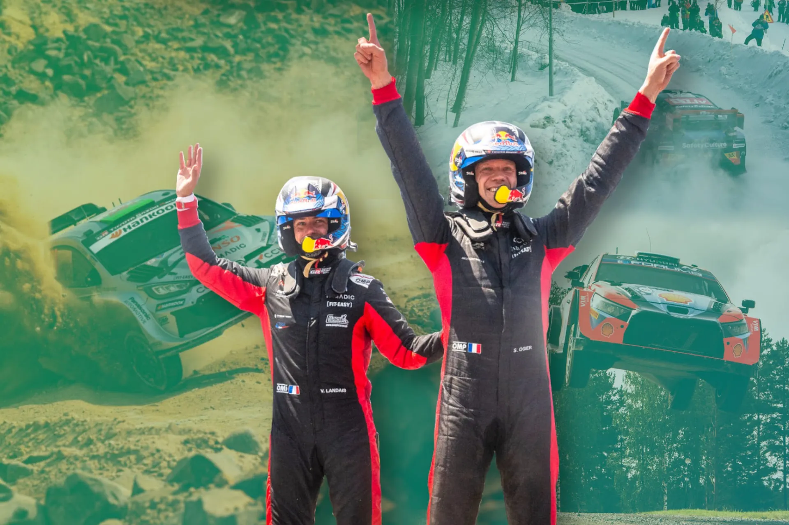
2025: The WRC Season in Numbers
Cover: Zenor Designs
Thumbnail: @ World
We've reached the end of the 2025 WRC season, and there are quite a few interesting takeaways we can take from it. Just like last year, in this post, we will try to find out who's been the fastest driver, who's been the most consistent, and whether some drivers have improved or regressed compared to last year. This year's review will be a little different. There won't be a big review, going over every round of the season. Instead, we'll focus on just the end-of-season stats, with more graphs and a few more interesting statistics!
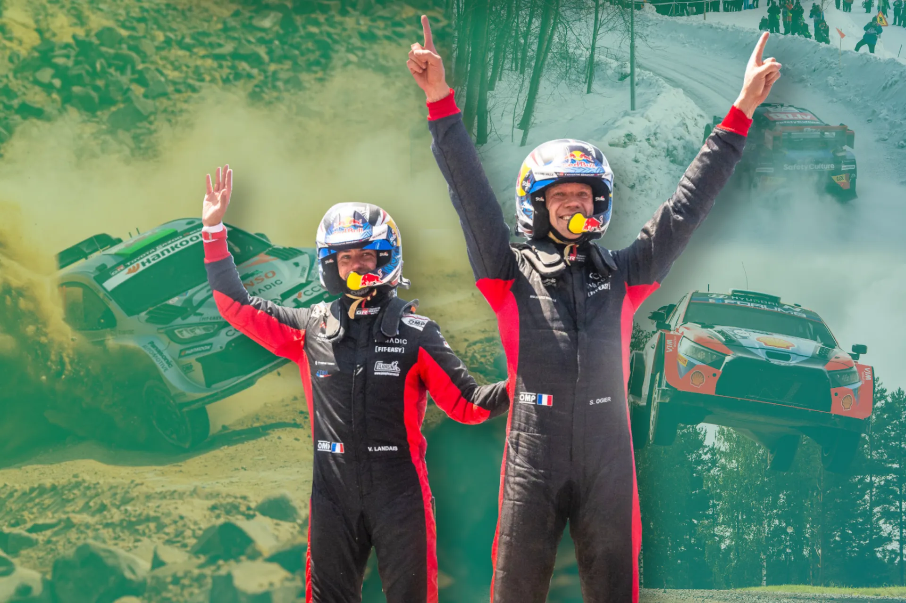
Before we dive in, let's break down how these numbers are determined! There are two key variables: Deficit to Ideal Time (measured in seconds per kilometer) and Percentage of Stages Completed with a Representative Time (expressed as a percentage). The first variable, Deficit to Ideal Time, reflects a driver's speed. It is calculated by comparing the driver's performance to the ideal pace, where the ideal pace is defined as a driver who won all the stages. Essentially, this shows how fast or slow a driver was throughout the season. The second variable, Percentage of Stages Completed with a Representative Time, relates to a driver's reliability. This percentage is based on the number of stages a driver completed within a competitive time relative to the total number of stages in the season, excluding super special stages (SSSs). A non-representative time might occur when a driver faces issues like mechanical problems, punctures, wrong tyre choices, or is simply cruising. To determine if a time is non-representative, it is compared to times from either the previous run of the stage or times from the same loop. If the time has a deficit of more than 160% of the previous pass or loop average, it is classified as non-representative. For this season, mechanical issues are taken into consideration, and don't hurt a driver's reliability/consistency score.
So let's start with how every driver has performed in the 14 rounds of the 2025 WRC season, and see where they are on our chart.
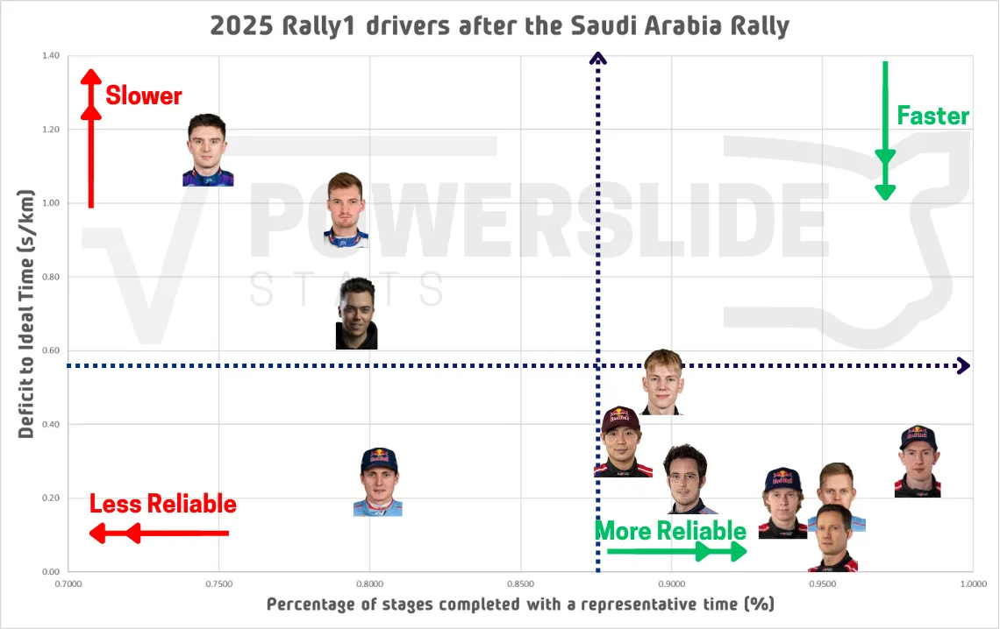
As you can see, Sebastien Ogier was the fastest driver this season, being just +0.19s/km off the ideal pace. The Frenchman is a long way ahead of the driver in second, who is outgoing teammate Kalle Rovanpera. The Finn was less reliable than his teammate and eventual champion, but was marginally faster than Hyundai's Ott Tanak, who was more reliable than the 2022 and 2023 champion.
Rovanpera struggled with the new Hankook tyres, and his performances dipped. Compared to last year, on gravel and snow, Rovanpera was 0.15s/km slower. That translates to about 2.5s on an average stage (16.5km). He was still able to give some stellar performances; his wins in Canarias and Finland were highlights. Rovanpera continued on his trend from 2024 of making mistakes though, dropping points in Greece, Paraguay, and Japan.
Tanak was the first of the non-Toyotas in 2025. In his last full season in the sport, the Estonian was actually the fastest driver on rough gravel rallies. Tanak was faster than everyone bar Ogier up until Finland. However, his performance took a drop after his home rally, with Hyundai also falling back compared to Toyota. While driving the 2024 car did help in CER, it did not in Japan, and the Estonian came to Saudi Arabia with no chance at a second title.
Elfyn Evans was slower than all three of the drivers mentioned, and also last year's champion Thierry Neuville. Where Evans edges out all his opponents on, is in reliability. The Welshman completed 97% of the stages this season with no fault of his own, quite a margin ahead of the driver in second place (Ogier - 94%). No mechanical failures for him either meant that he was able to challenge for the championship with the highest s/km deficit for a championship hopeful since Sebastien Ogier and Thierry Neuville in 2018 (+0.37s/km).
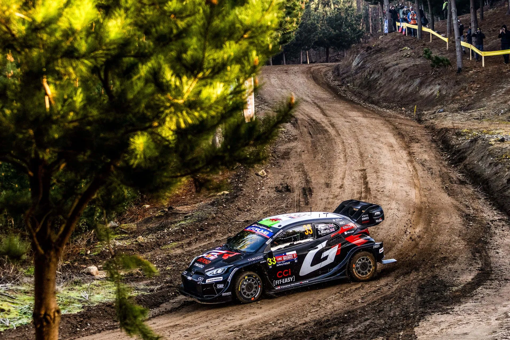
2025 was another year of what could have been for Evans
@World
Neuville regressed in terms of both pace this year by about 15%, which, on average, is about 8 tenths of a second per stage. The Belgian struggled with the new Hankook tyres and completed the year with just one win to his name at the season finale, narrowly avoiding a winless season for the first time since 2015. Neuville's 2025 season was actually his worst ever on tarmac, with the Belgian being 0.49s/km slower than the ideal pace, a staggering drop from his 0.13 last year.
Teammate Adrien Fourmaux's debut campaign with Hyundai did not go according to plan. The Frenchman ends 2025 as faster than Neuville, but without much silverware to show for it. Fourmaux ends the season as the only driver in the Fast and Unreliable quadrant, finishing the season with 81% of stages finished with a representative time. The Hyundai driver retired from his own mistake in Sweden, Sardinia, and Japan, while also breaking his suspension in Portugal. The pace is there, but he'll have to work on staying on the road for 2026.
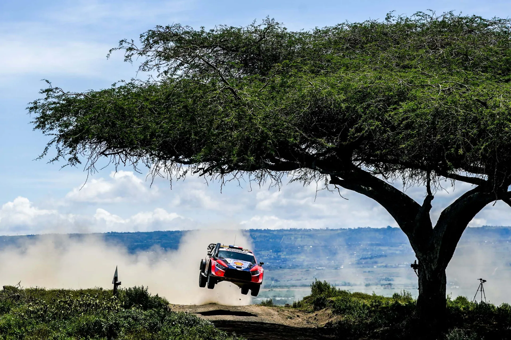
Adrien Fourmaux had the pace, but not the results
@World
As for Toyota's two other drivers, Katsuta and Pajari, they find themselves in a similar position. Katsuta became marginally more reliable and also faster compared to 2024. These small gains are still quite small for someone in his fifth full season in the WRC. The Japanese driver's highlights for 2025 were his great pace in Sweden, Japan, and Finland, with the low-lights being his crashes in Safari, Japan, and Greece.
As for Pajari, the first half of the season was not great for the young Finn, being slow and also suffering crashes and making mistakes (Monte Carlo, Canarias, Sardinia). Pajari upped his pace in the second half of the season, earning himself a maiden podium finish in Japan. His pace improved from 0.69s/km after Acropolis to 0.40s/km from Estonia onwards.
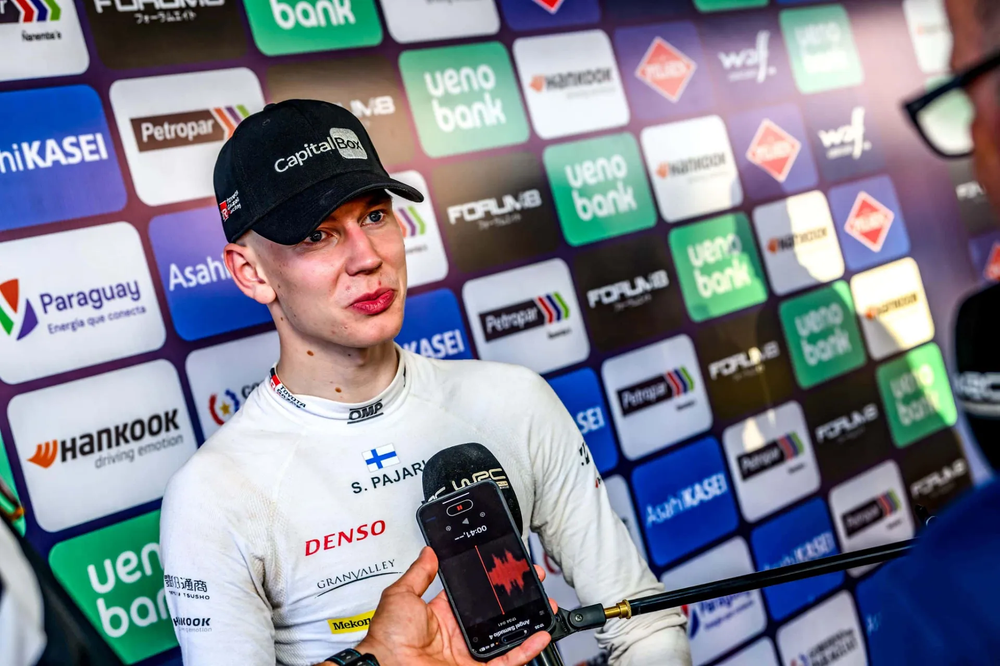
We saw an improved Sami Pajari on the second half of the 2025 season
@World
And now... onto the quadrant of misery. M-Sport had a dreadful campaign this year. This is the first time a manufacturer entry has failed to have its nominated drivers under the 1s/km threshold since Suzuki in 2008. Martins Sesks, who competed in a partial campaign, was the team's fastest driver with a 0.73s/km deficit. The Latvian had an exceptional performance in Saudi Arabia, ending the rally with a +0.10s/km deficit! He would miss out on a rally win due to punctures and engine issues.
More experienced Gregoire Munster was over a second per kilometer slower this year, and also became less reliable by ~3%. Debutant Josh McErlean endured a tough first season in the WRC's top class, especially on tarmac, but was still matching Munster on gravel.
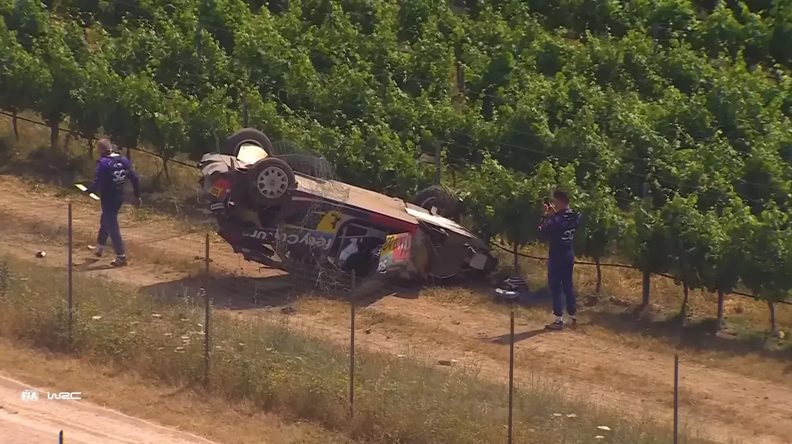
This was M-Sport's worst season in the WRC, with both of its manufacturer drivers being over a second per kilometer slower
WRC Official / YouTube
Now lets take a look at how each driver performed on each surface. Let's start with tarmac:
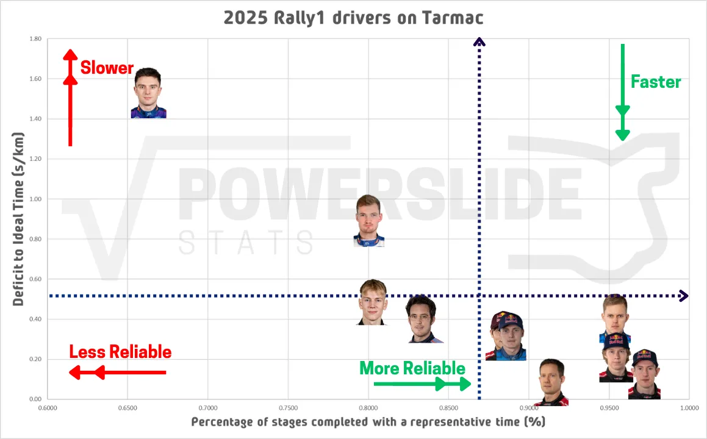
Just as with 2025 as a whole, Sebastien Ogier was the fastest driver on tarmac this season, with Evans being the driver who was the most reliable. This was the surface where the Welshman was at his best. Rovanpera's great performances in Canarias in CER are cancelled out by his poor Monte and Japan outings, and he finds himself as the third fastest.
Adrien Fourmaux was the fastest of the Hyundais on tarmac, with Tanak being the more reliable. Thierry Neuville is slower than both of his teammates and also Toyota's Takamoto Katsuta.
A big outlier in this graph is M-Sport's Josh McErlean. The Irishman was 2.26s/km slower at his debut in Monte Carlo, and continued to be over a second per kilometer slower on subsequent sealed surface events. He also completed only 66% of the stages due to crashes in Canarias and Japan.
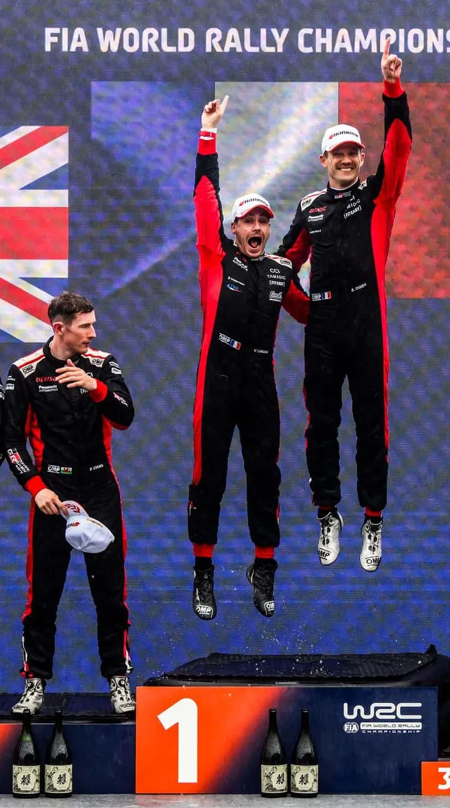
@World
So if we were to put this data on a single stage, here's how each driver performed on average.
Let's now check how everyone performed on fast gravel and snow:
Sebastien Ogier is once again the fastest driver, with wins in Paraguay and Chile on fast gravel. Behind him is teammate Kalle Rovanpera, who was 0.3s/km slower.
Elfyn Evans won in Sweden, but mediocre performances in Estonia and Paraguay see him fall behind the Hyundai trio. Remarkably, the Welshman finished all of the stages on fast gravel and snow! Ott Tanak was the fastest of the Hyundais, and could have been challenging Ogier and Rovanpera for fast driver on this type of event if it wasn't for his poor showing in Finland. Neuville had a decent showing on fast gravel when things were going his way. The Belgian was the fastest Hyundai driver in Finland, with punctures hampering his progress, while also being close to teammate Tanak in Sweden and Estonia. Adrien Fourmaux was not far off, being the fastest i20 N Rally1 driver in Sweden. The Frenchman did go off the road in Sweden, and also retired in Finland and Paraguay for technical reasons.
As for the rest of the field, Martins Sesks was easily the fastest of the M-Sport Puma Rally1s, ahead of Josh McErlean and Gregoire Munster.
It's worth mentioning that Oliver Solberg's performance in Estonia was stellar, being just 0.05s/km slower than the ideal pace!
So if we were to put this data on a single stage again, here's how each driver performed on average.
Moving onto rough gravel, here's how each driver performed:
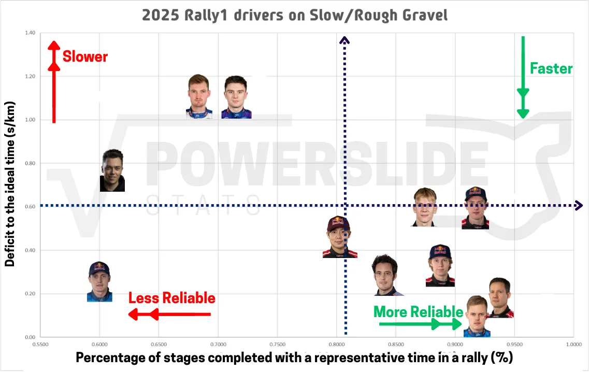
Ott Tanak broke Ogier's stronghold, ending the season as the fastest driver on rough gravel. The Estonian won in Greece, but was also the fastest driver in Kenya and Portugal. Ogier was in second position when it came to pace, being the fastest driver in Sardinia. Adrien Fourmaux was very fast in all rough gravel events, but only has one podium to show for it. The Frenchman retired in Portugal and Sardinia.
Neuville was the last of the Hyundais in 2025, at least on this surface. The Belgian showed strong pace in Sardinia, but would break his suspension. In Greece, his good run would end due to punctures. The outgoing champion would win his only rally this season in Saudi Arabia.
Kalle Rovanpera did not have great runs on the rougher events this year, with the Finn being slower on average than Ogier and the Hyundais. Kalle had two third-place finishes in Portugal and Sardinia.
As for Evans, the Welshman did win in Kenya, but after that, he'd struggle massively from first on the road. His +0.67s/km deficit on these rallies alone on Friday marks the worst performance out of any championship leader since 2014. He was slower than all of his teammates.
Martins Sesks' performance in Saudi Arabia was the best of the season on this surface, equal to Ogier in Sardinia.
Now let's have a look at how the teams performed as a whole in 2025!
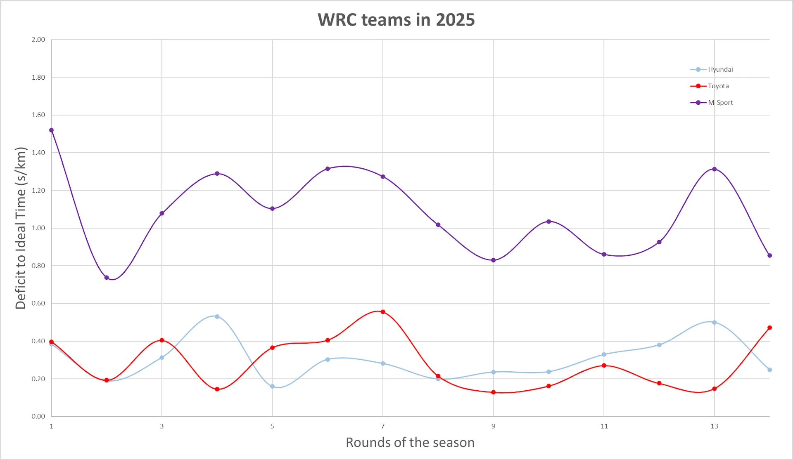
Toyota won 12 rallies this year, equalling a WRC record. However, the Japanese team was not as dominant as it seemed, especially in the first half of the season.
Up until Estonia, Hyundai was the fastest team on average, beating Toyota on this unofficial head-to-head 6-1, losing out in the Canary Islands. Hyundai missed out on wins due to mechanical issues and driver errors on most occasions. After Estonia, Toyota was the fastest driver in all rounds in all but one rallies, that being the finale in Saudi Arabia.
As for M-Sport, the team was hovering at the 1s/km mark for all events. Martins Sesks was the only M-Sport driver to be faster than the average pace in any round this season, that being in Saudi Arabia.
Here's how every driver performed against each other across the season:
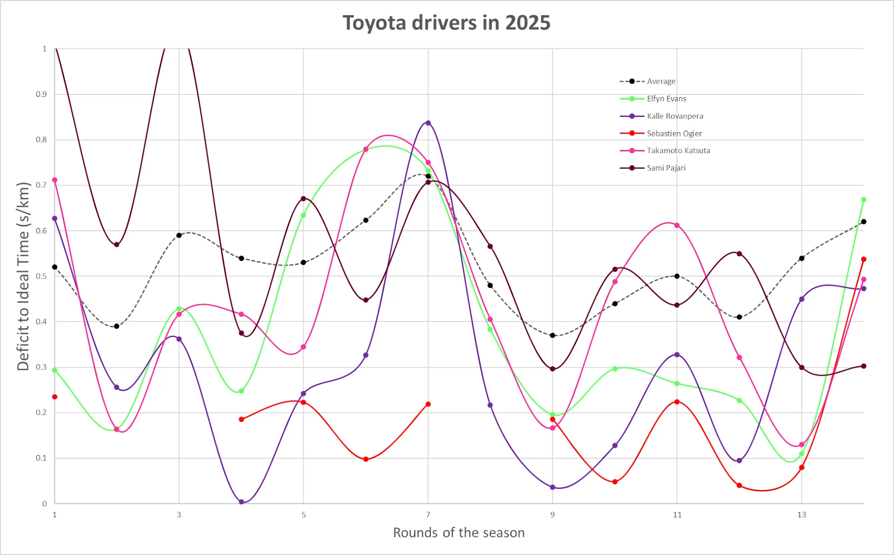
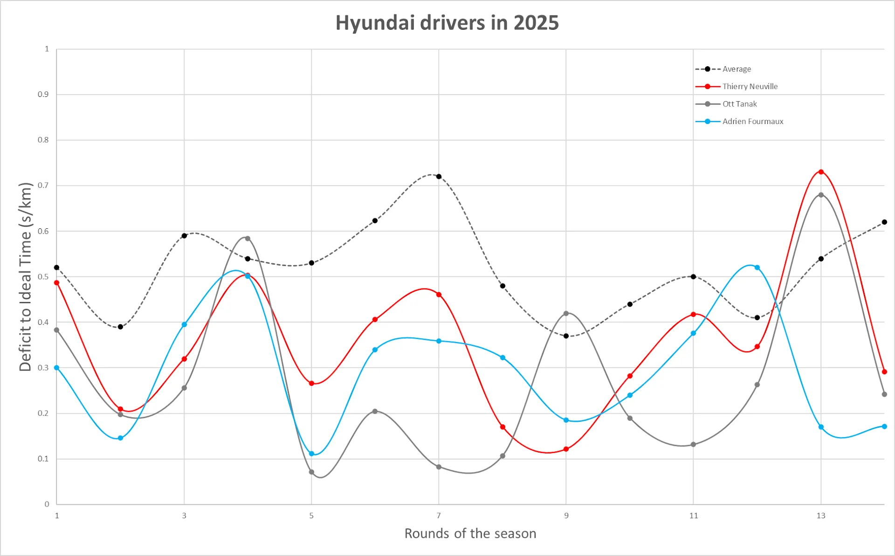
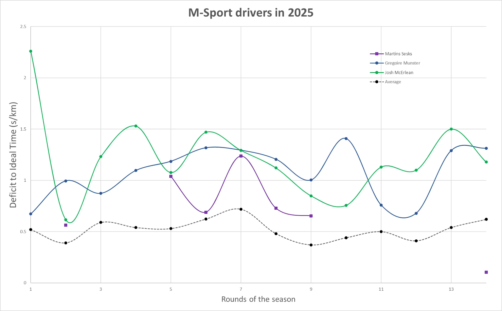
I will leave you with a complete table of how every Rally1 driver performed in each rally this year.
Thank you very much for reading the Powerslide Blog, and I hope to see you in 2026!


Comments